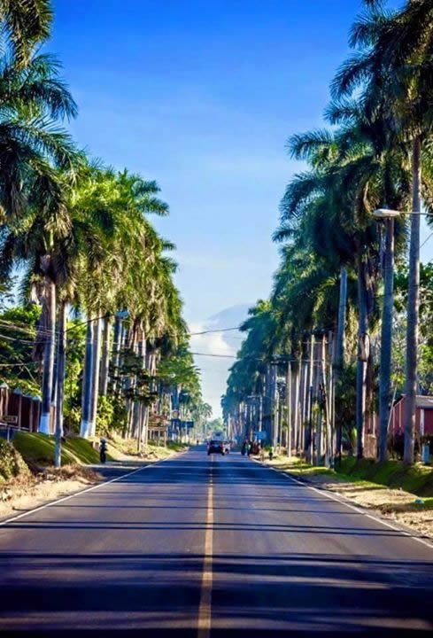

Central
Retalhuleu
Retalhuleu es una Ciudad y cabecera departamental del departamento homónimo, en la República de Guatemala. Su cabecera municipal es la villa del mismo nombre. Es una rica zona ganadera.
